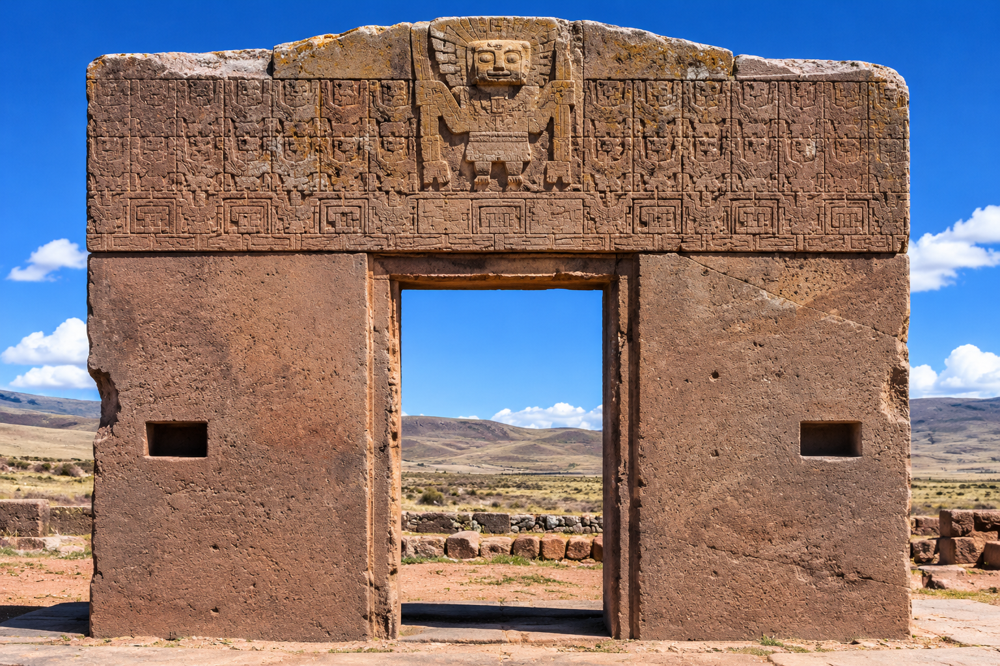
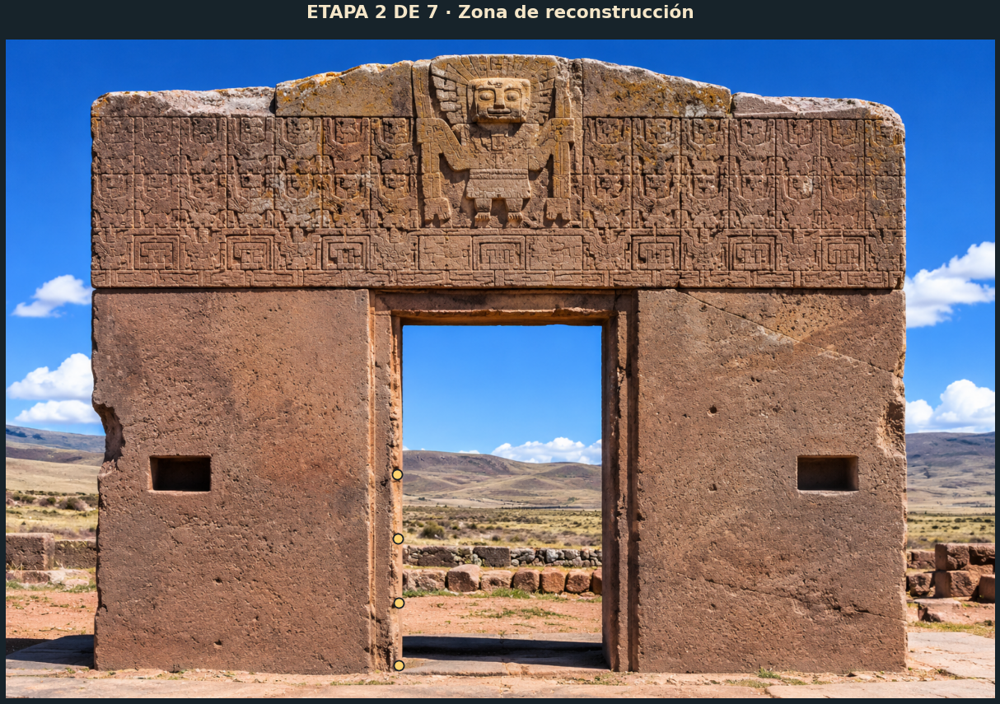
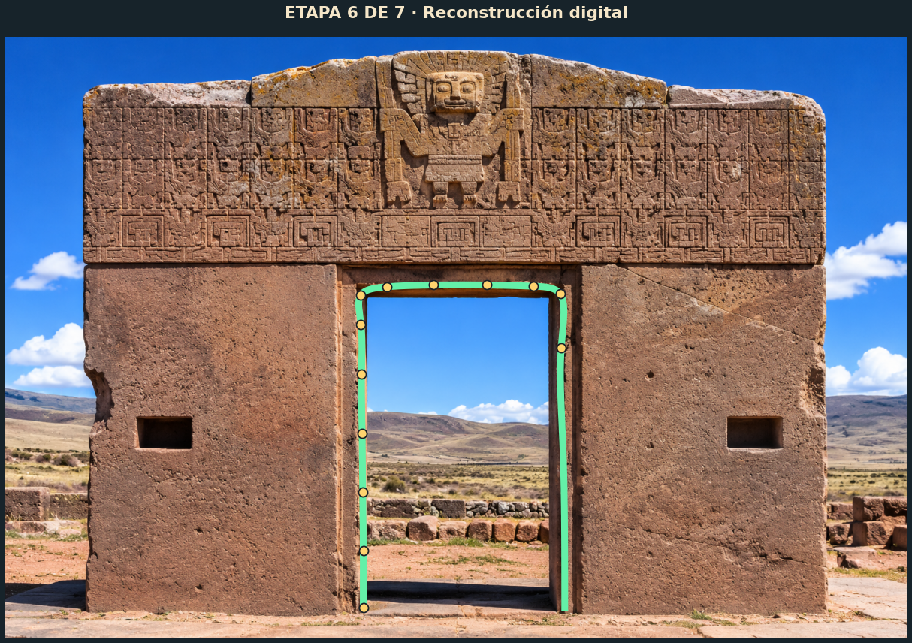
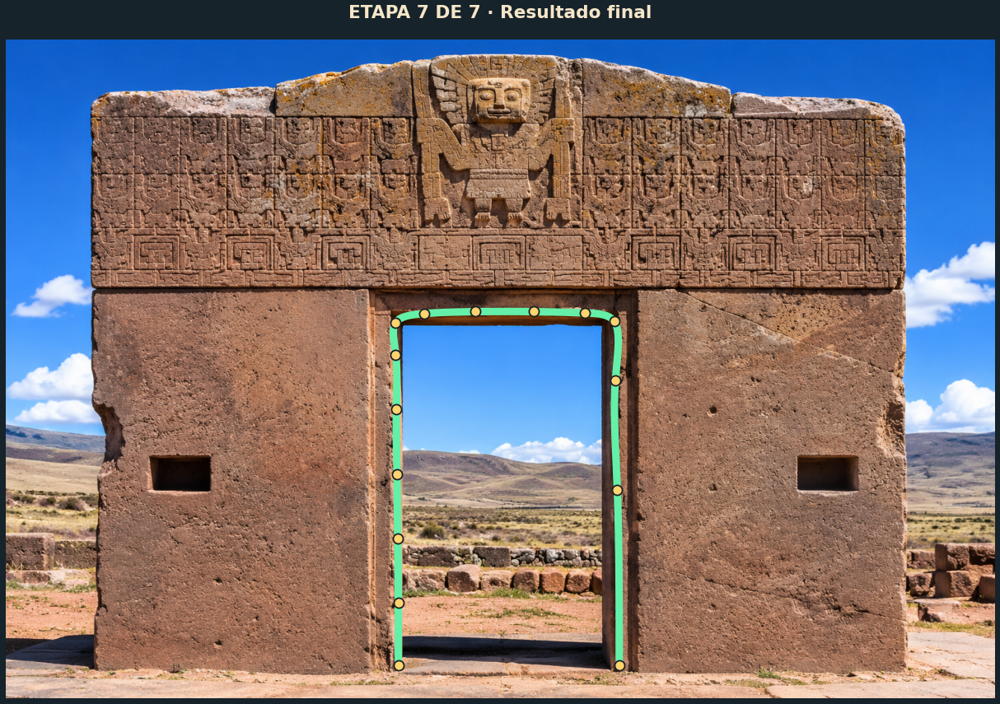
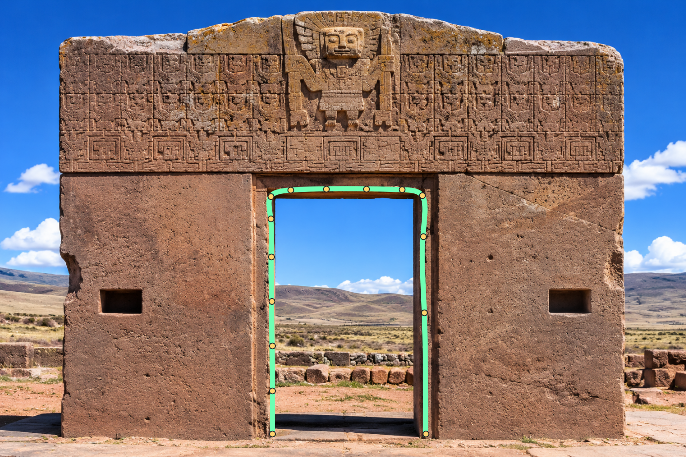

Nota metodológica: la imagen incluida es una visualización educativa generada por IA, no una fotografía documental. Los puntos y resultados se calcularon sobre ella. Para una entrega que exija fotografía real, sustituye la imagen por una fotografía propia o autorizada y vuelve a digitalizar los puntos.
Pieza y zona elegida

Contorno interior del vano central.
Modelo matemático
Xᵢ(t)=aₓ+bₓu+cₓu²+dₓu³
Yᵢ(t)=aᵧ+bᵧu+cᵧu²+dᵧu³
15 puntos · 14 tramos · parámetro centrípeto · spline natural.
Reconstrucción en siete etapas
Etapa 1

Etapa 2Etapa 3
Etapa 4
Etapa 5

Etapa 6
Etapa 7Resultados matemáticos
Errores máximos de continuidad:
| Condición | Error máximo |
|---|---|
| C0 | 1.137e-13 |
| C1 | 1.776e-15 |
| C2 | 2.220e-16 |
Puntos CSVCoeficientes CSVResumen JSON

Video de presentación
Documentación
Guion de narración · Instrucciones · Créditos y limitaciones